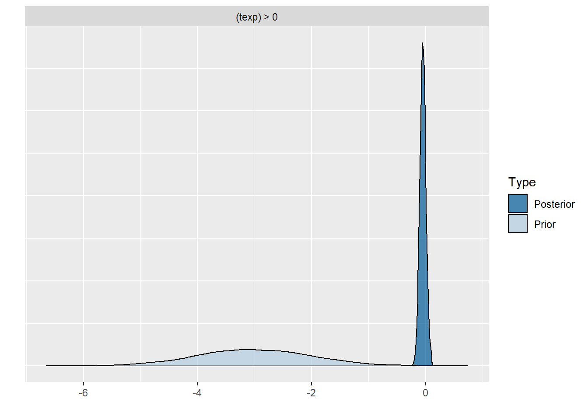
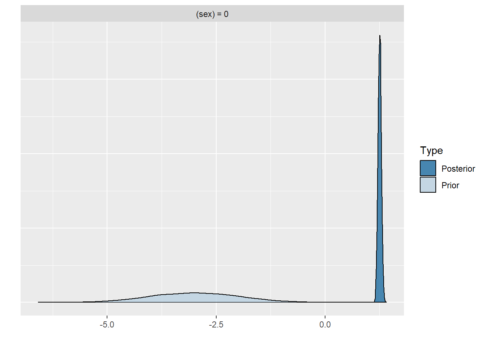
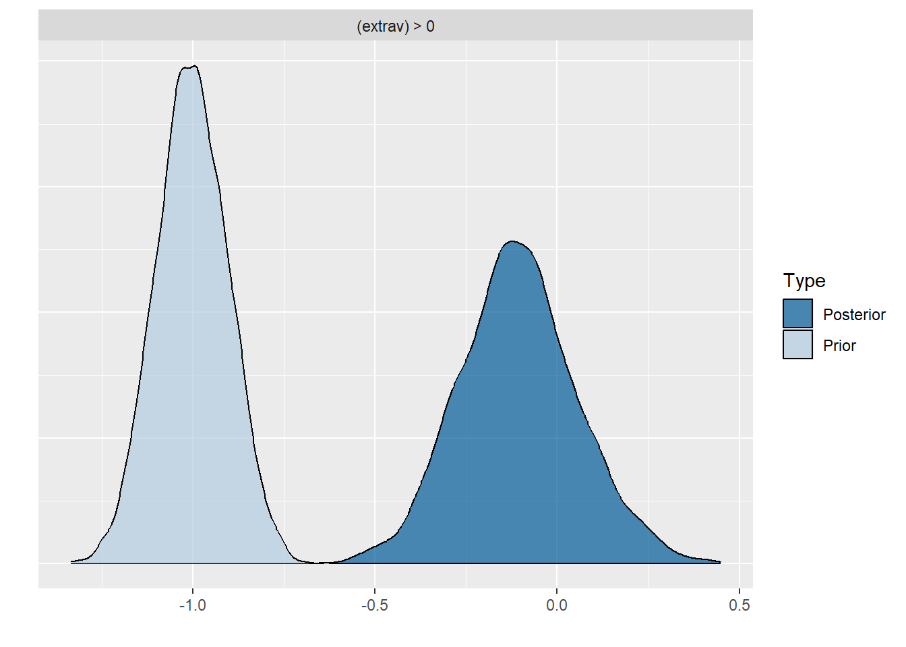
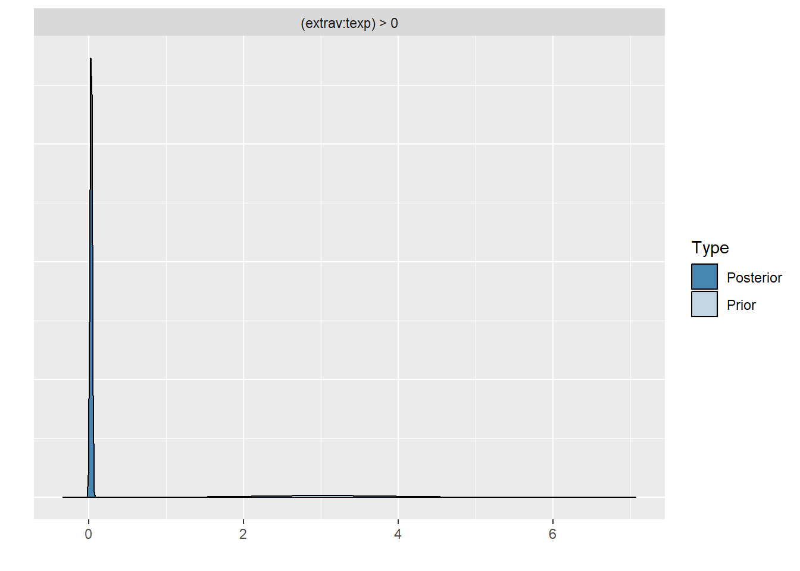
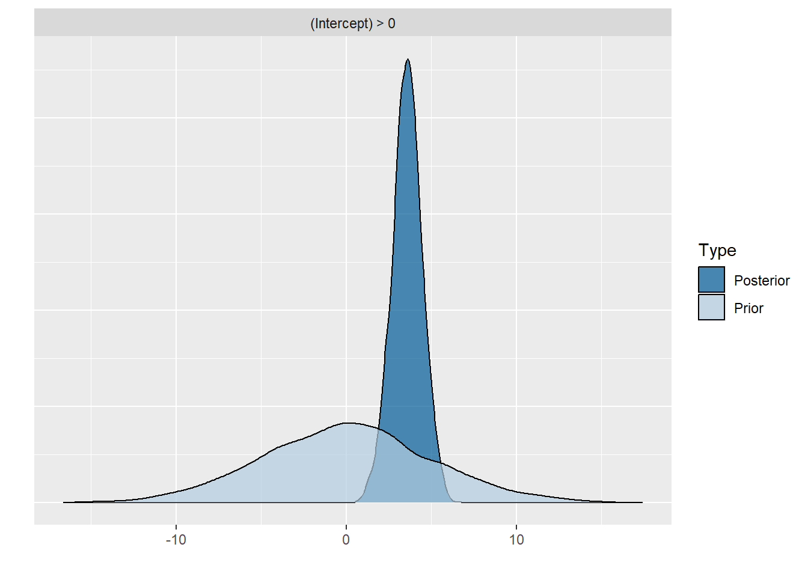
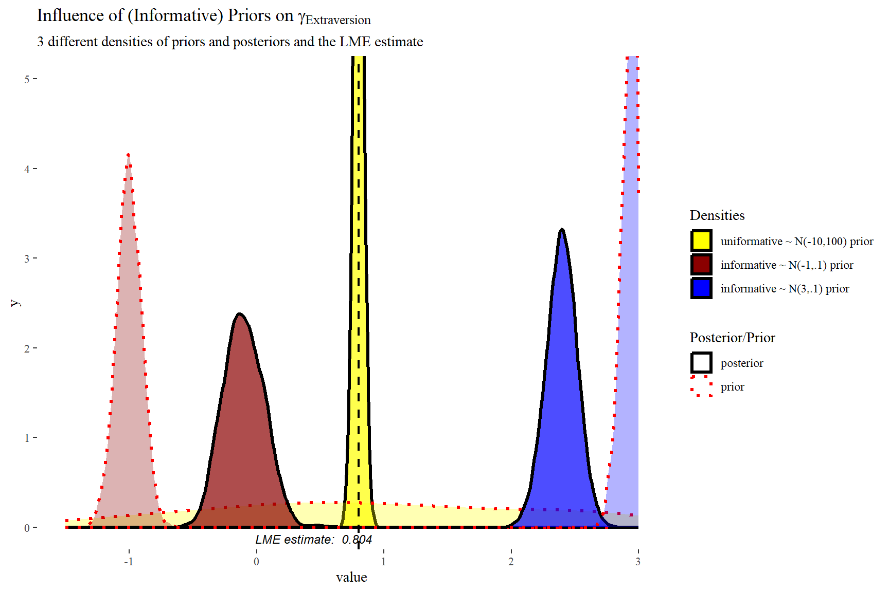

library(haven) # to load the SPSS .sav file
library(tidyverse) # needed for data manipulation.
library(brms) # for the analysis
library(RColorBrewer) # needed for some extra colours in one of the graphs
library(ggmcmc)
library(ggthemes)
library(lme4)Influence of Priors: Popularity Data
Introduction
This is part 2 of a 3 part series on how to do multilevel models in the Bayesian framework. In part 1 we explained how to step by step build the multilevel model we will use here and in part 3 we will look at the influence of different priors.
Preparation
This tutorial expects:
- Basic knowledge of multilevel analyses (first two chapters of the book are sufficient).
- Basic knowledge of coding in R, specifically the LME4 package.
- Basic knowledge of Bayesian Statistics.
- Installation of STAN and Rtools. For more information please see https://github.com/stan-dev/rstan/wiki/RStan-Getting-Started
- Installation of R packages
rstan, andbrms. This tutorial was made using brms version 2.21.0 in R version 4.4.1 - Basic knowledge of Bayesian inference
Priors
As stated in the BRMS manual: “Prior specifications are flexible and explicitly encourage users to apply prior distributions that actually reflect their beliefs.”
We will set 4 types of extra priors here (in addition to the uninformative prior we have used thus far) 1. With an estimate far off the value we found in the data with uninformative priors with a wide variance 2. With an estimate close to the value we found in the data with uninformative priors with a small variance 3. With an estimate far off the value we found in the data with uninformative priors with a small variance (1). 4. With an estimate far off the value we found in the data with uninformative priors with a small variance (2).
In this tutorial we will only focus on priors for the regression coefficients and not on the error and variance terms, since we are most likely to actually have information on the size and direction of a certain effect and less (but not completely) unlikely to have prior knowledge on the unexplained variances. You might have to play around a little bit with the controls of the brm() function and specifically the adapt_delta and max_treedepth. Thankfully BRMS will tell you when to do so.
Step 1: Setting up packages
n order to make the brms package function it need to call on STAN and a C++ compiler. For more information and a tutorial on how to install these please have a look at: https://github.com/stan-dev/rstan/wiki/RStan-Getting-Started and https://cran.r-project.org/bin/windows/Rtools/.
“Because brms is based on Stan, a C++ compiler is required. The program Rtools (available on https://cran.r-project.org/bin/windows/Rtools/) comes with a C++ compiler for Windows. On Mac, you should use Xcode. For further instructions on how to get the compilers running, see the prerequisites section at the RStan-Getting-Started page.” ~ quoted from the BRMS package document
After you have install the aforementioned software you need to load some other R packages. If you have not yet installed all below mentioned packages, you can install them by the command install.packages("NAMEOFPACKAGE")
note. If you are getting the error: Error: .onLoad failed in loadNamespace() for ‘dbplyr’, details: call: setClass(cl, contains = c(prevClass, “VIRTUAL”), where = where) error: error in contained classes (“character”) for class “ident”; class definition removed from ‘dbplyr’ the brms package is loaded before the tidyverse package. Please restart R and load them in the order, tidyverse first brms second.
Step 2: Downloading the data
The popularity dataset contains characteristics of pupils in different classes. The main goal of this tutorial is to find models and test hypotheses about the relation between these characteristics and the popularity of pupils (according to their classmates). To download the popularity data go to https://multilevel-analysis.sites.uu.nl/datasets/ and follow the links to https://github.com/MultiLevelAnalysis/Datasets-third-edition-Multilevel-book/blob/master/chapter%202/popularity/SPSS/popular2.sav. We will use the .sav file which can be found in the SPSS folder. After downloading the data to your working directory you can open it with the read_sav() command.
Alternatively, you can directly download them from GitHub into your R workspace using the following command:
popular2data <- read_sav(file ="https://github.com/MultiLevelAnalysis/Datasets-third-edition-Multilevel-book/blob/master/chapter%202/popularity/SPSS/popular2.sav?raw=true")There are some variables in the dataset that we do not use, so we can select the variables we will use and have a look at the first few observations.
popular2data <- select(popular2data, pupil, class, extrav, sex, texp, popular) # we select just the variables we will use
head(popular2data) # we have a look at the first 6 observations# A tibble: 6 × 6
pupil class extrav sex texp popular
<dbl> <dbl> <dbl> <dbl+lbl> <dbl> <dbl>
1 1 1 5 1 [girl] 24 6.3
2 2 1 7 0 [boy] 24 4.9
3 3 1 4 1 [girl] 24 5.3
4 4 1 3 1 [girl] 24 4.7
5 5 1 5 1 [girl] 24 6
6 6 1 4 0 [boy] 24 4.7The Effect of Priors
With the get_prior() command we can see which priors we can specify for this model.
get_prior(popular ~ 0 + Intercept + sex + extrav + texp + extrav:texp + (1 + extrav | class), data = popular2data) prior class coef group resp dpar nlpar lb ub
(flat) b
(flat) b extrav
(flat) b extrav:texp
(flat) b Intercept
(flat) b sex
(flat) b texp
lkj(1) cor
lkj(1) cor class
student_t(3, 0, 2.5) sd 0
student_t(3, 0, 2.5) sd class 0
student_t(3, 0, 2.5) sd extrav class 0
student_t(3, 0, 2.5) sd Intercept class 0
student_t(3, 0, 2.5) sigma 0
source
default
(vectorized)
(vectorized)
(vectorized)
(vectorized)
(vectorized)
default
(vectorized)
default
(vectorized)
(vectorized)
(vectorized)
defaultFor the first model with priors we just set normal priors for all regression coefficients, in reality many, many more prior distributions are possible, see the BRMS manual for an overview. To place a prior on the fixed intercept, one needs to include 0 + Intercept. See here for an explanation.
prior1 <- c(set_prior("normal(-10,100)", class = "b", coef = "extrav"),
set_prior("normal(10,100)", class = "b", coef = "extrav:texp"),
set_prior("normal(-5,100)", class = "b", coef = "sex"),
set_prior("normal(-5,100)", class = "b", coef = "texp"),
set_prior("normal(10,100)", class = "b", coef = "Intercept" ))model6 <- brm(popular ~ 0 + Intercept + sex + extrav + texp + extrav:texp + (1 + extrav|class),
data = popular2data, warmup = 1000,
iter = 3000, chains = 2,
prior = prior1,
seed = 123, control = list(adapt_delta = 0.97),
cores = 2,
sample_prior = TRUE) # to reach a usuable number effective samples in the posterior distribution of the interaction effect, we need many more iteration. This sampler will take quite some time and you might want to run it with a few less iterations.To see which priors were inserted, use the prior_summary() command
prior_summary(model6) prior class coef group resp dpar nlpar lb ub
(flat) b
normal(-10,100) b extrav
normal(10,100) b extrav:texp
normal(10,100) b Intercept
normal(-5,100) b sex
normal(-5,100) b texp
lkj_corr_cholesky(1) L
lkj_corr_cholesky(1) L class
student_t(3, 0, 2.5) sd 0
student_t(3, 0, 2.5) sd class 0
student_t(3, 0, 2.5) sd extrav class 0
student_t(3, 0, 2.5) sd Intercept class 0
student_t(3, 0, 2.5) sigma 0
source
default
user
user
user
user
user
default
(vectorized)
default
(vectorized)
(vectorized)
(vectorized)
defaultWe can also check the STAN code that is being used to run this model by using the stancode() command, here we also see the priors being implemented. This might help you understand the model a bit more, but is not necessary
stancode(model6)// generated with brms 2.21.0
functions {
/* compute correlated group-level effects
* Args:
* z: matrix of unscaled group-level effects
* SD: vector of standard deviation parameters
* L: cholesky factor correlation matrix
* Returns:
* matrix of scaled group-level effects
*/
matrix scale_r_cor(matrix z, vector SD, matrix L) {
// r is stored in another dimension order than z
return transpose(diag_pre_multiply(SD, L) * z);
}
}
data {
int<lower=1> N; // total number of observations
vector[N] Y; // response variable
int<lower=1> K; // number of population-level effects
matrix[N, K] X; // population-level design matrix
// data for group-level effects of ID 1
int<lower=1> N_1; // number of grouping levels
int<lower=1> M_1; // number of coefficients per level
array[N] int<lower=1> J_1; // grouping indicator per observation
// group-level predictor values
vector[N] Z_1_1;
vector[N] Z_1_2;
int<lower=1> NC_1; // number of group-level correlations
int prior_only; // should the likelihood be ignored?
}
transformed data {
}
parameters {
vector[K] b; // regression coefficients
real<lower=0> sigma; // dispersion parameter
vector<lower=0>[M_1] sd_1; // group-level standard deviations
matrix[M_1, N_1] z_1; // standardized group-level effects
cholesky_factor_corr[M_1] L_1; // cholesky factor of correlation matrix
}
transformed parameters {
matrix[N_1, M_1] r_1; // actual group-level effects
// using vectors speeds up indexing in loops
vector[N_1] r_1_1;
vector[N_1] r_1_2;
real lprior = 0; // prior contributions to the log posterior
// compute actual group-level effects
r_1 = scale_r_cor(z_1, sd_1, L_1);
r_1_1 = r_1[, 1];
r_1_2 = r_1[, 2];
lprior += normal_lpdf(b[1] | 10,100);
lprior += normal_lpdf(b[2] | -5,100);
lprior += normal_lpdf(b[3] | -10,100);
lprior += normal_lpdf(b[4] | -5,100);
lprior += normal_lpdf(b[5] | 10,100);
lprior += student_t_lpdf(sigma | 3, 0, 2.5)
- 1 * student_t_lccdf(0 | 3, 0, 2.5);
lprior += student_t_lpdf(sd_1 | 3, 0, 2.5)
- 2 * student_t_lccdf(0 | 3, 0, 2.5);
lprior += lkj_corr_cholesky_lpdf(L_1 | 1);
}
model {
// likelihood including constants
if (!prior_only) {
// initialize linear predictor term
vector[N] mu = rep_vector(0.0, N);
for (n in 1:N) {
// add more terms to the linear predictor
mu[n] += r_1_1[J_1[n]] * Z_1_1[n] + r_1_2[J_1[n]] * Z_1_2[n];
}
target += normal_id_glm_lpdf(Y | X, mu, b, sigma);
}
// priors including constants
target += lprior;
target += std_normal_lpdf(to_vector(z_1));
}
generated quantities {
// compute group-level correlations
corr_matrix[M_1] Cor_1 = multiply_lower_tri_self_transpose(L_1);
vector<lower=-1,upper=1>[NC_1] cor_1;
// additionally sample draws from priors
real prior_b__1 = normal_rng(10,100);
real prior_b__2 = normal_rng(-5,100);
real prior_b__3 = normal_rng(-10,100);
real prior_b__4 = normal_rng(-5,100);
real prior_b__5 = normal_rng(10,100);
real prior_sigma = student_t_rng(3,0,2.5);
real prior_sd_1 = student_t_rng(3,0,2.5);
real prior_cor_1 = lkj_corr_rng(M_1,1)[1, 2];
// extract upper diagonal of correlation matrix
for (k in 1:M_1) {
for (j in 1:(k - 1)) {
cor_1[choose(k - 1, 2) + j] = Cor_1[j, k];
}
}
// use rejection sampling for truncated priors
while (prior_sigma < 0) {
prior_sigma = student_t_rng(3,0,2.5);
}
while (prior_sd_1 < 0) {
prior_sd_1 = student_t_rng(3,0,2.5);
}
}After this model with uninformative priors, it’s time to do the analysis with informative priors. Three models with different priors are tested and compared to investigate the influence of the construction of priors on the posterior distributions and therefore on the results in general.
prior2 <- c(set_prior("normal(.8,.1)", class = "b", coef = "extrav"),
set_prior("normal(-.025,.1)", class = "b", coef = "extrav:texp"),
set_prior("normal(1.25,.1)", class = "b", coef = "sex"),
set_prior("normal(.23,.1)", class = "b", coef = "texp"),
set_prior("normal(-1.21,.1)", class = "b", coef = "Intercept" ))
model7 <- brm(popular ~ 0 + Intercept + sex + extrav + texp + extrav:texp + (1 + extrav|class),
data = popular2data, warmup = 1000,
iter = 3000, chains = 2,
prior = prior2,
seed = 123, control = list(adapt_delta = 0.97),
cores = 2,
sample_prior = TRUE)summary(model7) Family: gaussian
Links: mu = identity; sigma = identity
Formula: popular ~ 0 + Intercept + sex + extrav + texp + extrav:texp + (1 + extrav | class)
Data: popular2data (Number of observations: 2000)
Draws: 2 chains, each with iter = 3000; warmup = 1000; thin = 1;
total post-warmup draws = 4000
Multilevel Hyperparameters:
~class (Number of levels: 100)
Estimate Est.Error l-95% CI u-95% CI Rhat Bulk_ESS
sd(Intercept) 0.61 0.11 0.44 0.86 1.00 484
sd(extrav) 0.04 0.03 0.00 0.11 1.00 146
cor(Intercept,extrav) -0.37 0.43 -0.90 0.77 1.00 1181
Tail_ESS
sd(Intercept) 1610
sd(extrav) 631
cor(Intercept,extrav) 808
Regression Coefficients:
Estimate Est.Error l-95% CI u-95% CI Rhat Bulk_ESS Tail_ESS
Intercept -1.21 0.09 -1.40 -1.03 1.00 4004 2704
sex 1.24 0.03 1.18 1.31 1.00 6440 2571
extrav 0.80 0.02 0.76 0.85 1.00 3220 2620
texp 0.23 0.01 0.21 0.24 1.00 2795 2958
extrav:texp -0.02 0.00 -0.03 -0.02 1.00 3557 3193
Further Distributional Parameters:
Estimate Est.Error l-95% CI u-95% CI Rhat Bulk_ESS Tail_ESS
sigma 0.75 0.01 0.72 0.77 1.00 3779 3174
Draws were sampled using sampling(NUTS). For each parameter, Bulk_ESS
and Tail_ESS are effective sample size measures, and Rhat is the potential
scale reduction factor on split chains (at convergence, Rhat = 1).prior3 <- c(set_prior("normal(-1,.1)", class = "b", coef = "extrav"),
set_prior("normal(3, 1)", class = "b", coef = "extrav:texp"),
set_prior("normal(-3,1)", class = "b", coef = "sex"),
set_prior("normal(-3,1)", class = "b", coef = "texp"),
set_prior("normal(0,5)", class = "b", coef = "Intercept" ))
model8 <- brm(popular ~ 0 + Intercept + sex + extrav + texp + extrav:texp + (1 + extrav|class),
data = popular2data, warmup = 1000,
iter = 3000, chains = 2,
prior = prior3,
seed = 123, control = list(adapt_delta = 0.97),
cores = 2,
sample_prior = TRUE)summary(model8) Family: gaussian
Links: mu = identity; sigma = identity
Formula: popular ~ 0 + Intercept + sex + extrav + texp + extrav:texp + (1 + extrav | class)
Data: popular2data (Number of observations: 2000)
Draws: 2 chains, each with iter = 3000; warmup = 1000; thin = 1;
total post-warmup draws = 4000
Multilevel Hyperparameters:
~class (Number of levels: 100)
Estimate Est.Error l-95% CI u-95% CI Rhat Bulk_ESS
sd(Intercept) 2.13 0.39 1.37 2.95 1.00 199
sd(extrav) 0.40 0.07 0.25 0.55 1.00 199
cor(Intercept,extrav) -0.96 0.02 -0.98 -0.91 1.00 251
Tail_ESS
sd(Intercept) 385
sd(extrav) 289
cor(Intercept,extrav) 395
Regression Coefficients:
Estimate Est.Error l-95% CI u-95% CI Rhat Bulk_ESS Tail_ESS
Intercept 3.56 0.88 1.77 5.29 1.00 201 312
sex 1.25 0.04 1.18 1.33 1.00 5889 2848
extrav -0.11 0.16 -0.41 0.23 1.00 219 289
texp -0.05 0.05 -0.15 0.06 1.00 201 317
extrav:texp 0.03 0.01 0.01 0.05 1.00 196 314
Further Distributional Parameters:
Estimate Est.Error l-95% CI u-95% CI Rhat Bulk_ESS Tail_ESS
sigma 0.74 0.01 0.72 0.77 1.00 6219 2802
Draws were sampled using sampling(NUTS). For each parameter, Bulk_ESS
and Tail_ESS are effective sample size measures, and Rhat is the potential
scale reduction factor on split chains (at convergence, Rhat = 1).prior4 <- c(set_prior("normal(3,.1)", class = "b", coef = "extrav"),
set_prior("normal(-3,1)", class = "b", coef = "extrav:texp"),
set_prior("normal(3,1)", class = "b", coef = "sex"),
set_prior("normal(3,1)", class = "b", coef = "texp"),
set_prior("normal(0,5)", class = "b", coef = "Intercept" ))
model9 <- brm(popular ~ 0 + Intercept + sex + extrav + texp + extrav:texp + (1 + extrav|class),
data = popular2data, warmup = 1000,
iter = 3000, chains = 2,
prior = prior4,
seed = 123, control = list(adapt_delta = 0.97),
cores = 2,
sample_prior = TRUE)summary(model9) Family: gaussian
Links: mu = identity; sigma = identity
Formula: popular ~ 0 + Intercept + sex + extrav + texp + extrav:texp + (1 + extrav | class)
Data: popular2data (Number of observations: 2000)
Draws: 2 chains, each with iter = 3000; warmup = 1000; thin = 1;
total post-warmup draws = 4000
Multilevel Hyperparameters:
~class (Number of levels: 100)
Estimate Est.Error l-95% CI u-95% CI Rhat Bulk_ESS
sd(Intercept) 3.47 0.42 2.72 4.34 1.00 335
sd(extrav) 0.67 0.07 0.54 0.82 1.00 472
cor(Intercept,extrav) -0.99 0.00 -0.99 -0.98 1.00 424
Tail_ESS
sd(Intercept) 768
sd(extrav) 922
cor(Intercept,extrav) 877
Regression Coefficients:
Estimate Est.Error l-95% CI u-95% CI Rhat Bulk_ESS Tail_ESS
Intercept -9.37 0.79 -10.90 -7.87 1.00 399 1175
sex 1.25 0.04 1.18 1.32 1.00 6423 3094
extrav 2.39 0.12 2.16 2.62 1.00 913 1399
texp 0.69 0.05 0.60 0.79 1.00 481 1058
extrav:texp -0.12 0.01 -0.13 -0.10 1.00 703 926
Further Distributional Parameters:
Estimate Est.Error l-95% CI u-95% CI Rhat Bulk_ESS Tail_ESS
sigma 0.74 0.01 0.72 0.77 1.00 6680 3109
Draws were sampled using sampling(NUTS). For each parameter, Bulk_ESS
and Tail_ESS are effective sample size measures, and Rhat is the potential
scale reduction factor on split chains (at convergence, Rhat = 1).Comparing the last three models we see that for the first two models the prior specification does not really have a large influence on the results. However, for the final model with the highly informative priors that are far from the observed data, the priors do influence the posterior results. Because of the fairly large dataset, the priors are unlikely to have a large influence unless they are highly informative. Because we asked to save the prior in the last model ("sample_prior = TRUE"), we can now plot the difference between the prior and the posterior distribution of different parameters. In all cases, we see that the prior has a large influence on the posterior compared to the posterior estimates we arrived in earlier models.
plot(hypothesis(model8, "texp > 0")) # if you would just run this command without the plot wrapper, you would get the support for the hypothesis that the regression coefficient texp is larger than 0, this is in interesting way to test possible hypothesis you had.
plot(hypothesis(model8, "sex = 0"))
plot(hypothesis(model8, "extrav > 0"))
plot(hypothesis(model8, "extrav:texp > 0"))
plot(hypothesis(model8, "Intercept > 0"))
posterior1 <- posterior_samples(model6, pars = "b_extrav")[, c(1,3)]
posterior2 <- posterior_samples(model8, pars = "b_extrav")[, c(1,3)]
posterior3 <- posterior_samples(model9, pars = "b_extrav")[, c(1,3)]
posterior1.2.3 <- bind_rows("prior 1" = gather(posterior1),
"prior 2" = gather(posterior2),
"prior 3" = gather(posterior3),
.id = "id")
modelLME <- lmer(popular ~ 1 + sex + extrav + texp + extrav:texp + (1 + extrav | class), data = popular2data)
ggplot(data = posterior1.2.3,
mapping = aes(x = value,
fill = id,
colour = key,
linetype = key,
alpha = key)) +
geom_density(size = 1.2)+
geom_vline(xintercept = summary(modelLME)$coefficients["extrav", "Estimate"], # add the frequentist solution too
size = .8, linetype = 2, col = "black")+
scale_x_continuous(limits = c(-1.5, 3))+
coord_cartesian(ylim = c(0, 5))+
scale_fill_manual(name = "Densities",
values = c("Yellow","darkred","blue" ),
labels = c("uniformative ~ N(-10,100) prior",
"informative ~ N(-1,.1) prior",
"informative ~ N(3,.1) prior") )+
scale_colour_manual(name = 'Posterior/Prior',
values = c("black","red"),
labels = c("posterior", "prior"))+
scale_linetype_manual(name ='Posterior/Prior',
values = c("solid","dotted"),
labels = c("posterior", "prior"))+
scale_alpha_discrete(name = 'Posterior/Prior',
range = c(.7,.3),
labels = c("posterior", "prior"))+
annotate(geom = "text",
x = 0.45, y = -.13,
label = "LME estimate: 0.804",
col = "black",
family = theme_get()$text[["family"]],
size = theme_get()$text[["size"]]/3.5,
fontface="italic")+
labs(title = expression("Influence of (Informative) Priors on" ~ gamma[Extraversion]),
subtitle = "3 different densities of priors and posteriors and the LME estimate")+
theme_tufte()
In this plot we can clearly see how the informative priors pull the posteriors towards them, while the uninformarive prior yields a posterior that is centred around what would be the frequentist (LME4) estimate.
Brms Reference
Original Computing Environment
devtools::session_info()─ Session info ───────────────────────────────────────────────────────────────
setting value
version R version 4.4.1 (2024-06-14 ucrt)
os Windows 10 x64 (build 19045)
system x86_64, mingw32
ui RTerm
language (EN)
collate German_Germany.utf8
ctype German_Germany.utf8
tz Europe/Berlin
date 2024-07-07
pandoc 3.1.11 @ C:/Program Files/RStudio/resources/app/bin/quarto/bin/tools/ (via rmarkdown)
─ Packages ───────────────────────────────────────────────────────────────────
! package * version date (UTC) lib source
abind 1.4-5 2016-07-21 [1] CRAN (R 4.4.0)
backports 1.5.0 2024-05-23 [1] CRAN (R 4.4.0)
bayesplot 1.11.1 2024-02-15 [1] CRAN (R 4.4.1)
boot 1.3-30 2024-02-26 [2] CRAN (R 4.4.1)
bridgesampling 1.1-2 2021-04-16 [1] CRAN (R 4.4.1)
brms * 2.21.0 2024-03-20 [1] CRAN (R 4.4.1)
Brobdingnag 1.2-9 2022-10-19 [1] CRAN (R 4.4.1)
cachem 1.1.0 2024-05-16 [1] CRAN (R 4.4.1)
checkmate 2.3.1 2023-12-04 [1] CRAN (R 4.4.1)
cli 3.6.3 2024-06-21 [1] CRAN (R 4.4.1)
coda 0.19-4.1 2024-01-31 [1] CRAN (R 4.4.1)
codetools 0.2-20 2024-03-31 [2] CRAN (R 4.4.1)
colorspace 2.1-0 2023-01-23 [1] CRAN (R 4.4.1)
crayon 1.5.3 2024-06-20 [1] CRAN (R 4.4.1)
curl 5.2.1 2024-03-01 [1] CRAN (R 4.4.1)
devtools 2.4.5 2022-10-11 [1] CRAN (R 4.4.1)
digest 0.6.36 2024-06-23 [1] CRAN (R 4.4.1)
distributional 0.4.0 2024-02-07 [1] CRAN (R 4.4.1)
dplyr * 1.1.4 2023-11-17 [1] CRAN (R 4.4.1)
ellipsis 0.3.2 2021-04-29 [1] CRAN (R 4.4.1)
evaluate 0.24.0 2024-06-10 [1] CRAN (R 4.4.1)
fansi 1.0.6 2023-12-08 [1] CRAN (R 4.4.1)
farver 2.1.2 2024-05-13 [1] CRAN (R 4.4.1)
fastmap 1.2.0 2024-05-15 [1] CRAN (R 4.4.1)
forcats * 1.0.0 2023-01-29 [1] CRAN (R 4.4.1)
fs 1.6.4 2024-04-25 [1] CRAN (R 4.4.1)
generics 0.1.3 2022-07-05 [1] CRAN (R 4.4.1)
GGally 2.2.1 2024-02-14 [1] CRAN (R 4.4.1)
ggmcmc * 1.5.1.1 2021-02-10 [1] CRAN (R 4.4.1)
ggplot2 * 3.5.1 2024-04-23 [1] CRAN (R 4.4.1)
ggstats 0.6.0 2024-04-05 [1] CRAN (R 4.4.1)
ggthemes * 5.1.0 2024-02-10 [1] CRAN (R 4.4.1)
glue 1.7.0 2024-01-09 [1] CRAN (R 4.4.1)
gridExtra 2.3 2017-09-09 [1] CRAN (R 4.4.1)
gtable 0.3.5 2024-04-22 [1] CRAN (R 4.4.1)
haven * 2.5.4 2023-11-30 [1] CRAN (R 4.4.1)
hms 1.1.3 2023-03-21 [1] CRAN (R 4.4.1)
htmltools 0.5.8.1 2024-04-04 [1] CRAN (R 4.4.1)
htmlwidgets 1.6.4 2023-12-06 [1] CRAN (R 4.4.1)
httpuv 1.6.15 2024-03-26 [1] CRAN (R 4.4.1)
inline 0.3.19 2021-05-31 [1] CRAN (R 4.4.1)
jsonlite 1.8.8 2023-12-04 [1] CRAN (R 4.4.1)
knitr 1.47 2024-05-29 [1] CRAN (R 4.4.1)
labeling 0.4.3 2023-08-29 [1] CRAN (R 4.4.0)
later 1.3.2 2023-12-06 [1] CRAN (R 4.4.1)
lattice 0.22-6 2024-03-20 [2] CRAN (R 4.4.1)
lifecycle 1.0.4 2023-11-07 [1] CRAN (R 4.4.1)
lme4 * 1.1-35.4 2024-06-19 [1] CRAN (R 4.4.1)
loo 2.7.0 2024-02-24 [1] CRAN (R 4.4.1)
lubridate * 1.9.3 2023-09-27 [1] CRAN (R 4.4.1)
magrittr 2.0.3 2022-03-30 [1] CRAN (R 4.4.1)
MASS 7.3-60.2 2024-04-26 [2] CRAN (R 4.4.1)
Matrix * 1.7-0 2024-04-26 [2] CRAN (R 4.4.1)
matrixStats 1.3.0 2024-04-11 [1] CRAN (R 4.4.1)
memoise 2.0.1 2021-11-26 [1] CRAN (R 4.4.1)
mime 0.12 2021-09-28 [1] CRAN (R 4.4.0)
miniUI 0.1.1.1 2018-05-18 [1] CRAN (R 4.4.1)
minqa 1.2.7 2024-05-20 [1] CRAN (R 4.4.1)
munsell 0.5.1 2024-04-01 [1] CRAN (R 4.4.1)
mvtnorm 1.2-5 2024-05-21 [1] CRAN (R 4.4.1)
nlme 3.1-164 2023-11-27 [2] CRAN (R 4.4.1)
nloptr 2.1.1 2024-06-25 [1] CRAN (R 4.4.1)
pillar 1.9.0 2023-03-22 [1] CRAN (R 4.4.1)
pkgbuild 1.4.4 2024-03-17 [1] CRAN (R 4.4.1)
pkgconfig 2.0.3 2019-09-22 [1] CRAN (R 4.4.1)
pkgload 1.3.4 2024-01-16 [1] CRAN (R 4.4.1)
plyr 1.8.9 2023-10-02 [1] CRAN (R 4.4.1)
posterior 1.5.0 2023-10-31 [1] CRAN (R 4.4.1)
profvis 0.3.8 2023-05-02 [1] CRAN (R 4.4.1)
promises 1.3.0 2024-04-05 [1] CRAN (R 4.4.1)
purrr * 1.0.2 2023-08-10 [1] CRAN (R 4.4.1)
QuickJSR 1.2.2 2024-06-07 [1] CRAN (R 4.4.1)
R6 2.5.1 2021-08-19 [1] CRAN (R 4.4.1)
RColorBrewer * 1.1-3 2022-04-03 [1] CRAN (R 4.4.0)
Rcpp * 1.0.12 2024-01-09 [1] CRAN (R 4.4.1)
D RcppParallel 5.1.7 2023-02-27 [1] CRAN (R 4.4.1)
readr * 2.1.5 2024-01-10 [1] CRAN (R 4.4.1)
remotes 2.5.0 2024-03-17 [1] CRAN (R 4.4.1)
reshape2 1.4.4 2020-04-09 [1] CRAN (R 4.4.1)
rlang 1.1.4 2024-06-04 [1] CRAN (R 4.4.1)
rmarkdown 2.27 2024-05-17 [1] CRAN (R 4.4.1)
rstan 2.35.0.9000 2024-06-22 [1] https://stan-dev.r-universe.dev (R 4.4.0)
rstantools 2.4.0 2024-01-31 [1] CRAN (R 4.4.1)
rstudioapi 0.16.0 2024-03-24 [1] CRAN (R 4.4.1)
scales 1.3.0 2023-11-28 [1] CRAN (R 4.4.1)
sessioninfo 1.2.2 2021-12-06 [1] CRAN (R 4.4.1)
shiny 1.8.1.1 2024-04-02 [1] CRAN (R 4.4.1)
StanHeaders 2.35.0.9000 2024-06-22 [1] https://stan-dev.r-universe.dev (R 4.4.0)
stringi 1.8.4 2024-05-06 [1] CRAN (R 4.4.0)
stringr * 1.5.1 2023-11-14 [1] CRAN (R 4.4.1)
tensorA 0.36.2.1 2023-12-13 [1] CRAN (R 4.4.0)
tibble * 3.2.1 2023-03-20 [1] CRAN (R 4.4.1)
tidyr * 1.3.1 2024-01-24 [1] CRAN (R 4.4.1)
tidyselect 1.2.1 2024-03-11 [1] CRAN (R 4.4.1)
tidyverse * 2.0.0 2023-02-22 [1] CRAN (R 4.4.1)
timechange 0.3.0 2024-01-18 [1] CRAN (R 4.4.1)
tzdb 0.4.0 2023-05-12 [1] CRAN (R 4.4.1)
urlchecker 1.0.1 2021-11-30 [1] CRAN (R 4.4.1)
usethis 2.2.3 2024-02-19 [1] CRAN (R 4.4.1)
utf8 1.2.4 2023-10-22 [1] CRAN (R 4.4.1)
vctrs 0.6.5 2023-12-01 [1] CRAN (R 4.4.1)
withr 3.0.0 2024-01-16 [1] CRAN (R 4.4.1)
xfun 0.45 2024-06-16 [1] CRAN (R 4.4.1)
xtable 1.8-4 2019-04-21 [1] CRAN (R 4.4.1)
yaml 2.3.8 2023-12-11 [1] CRAN (R 4.4.0)
[1] C:/Users/Florian/AppData/Local/R/win-library/4.4
[2] C:/Program Files/R/R-4.4.1/library
D ── DLL MD5 mismatch, broken installation.
──────────────────────────────────────────────────────────────────────────────